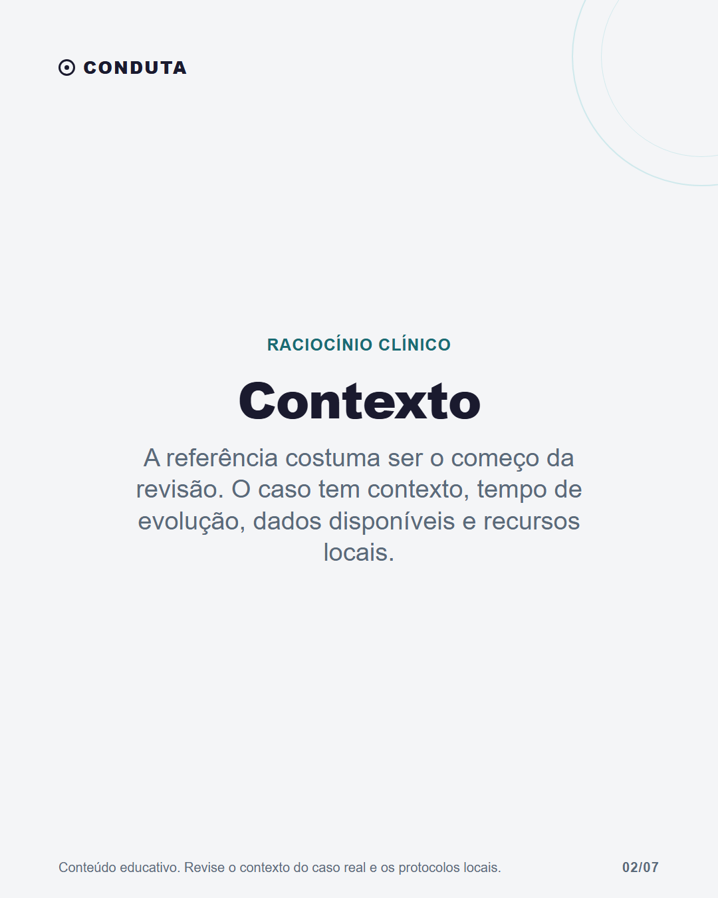
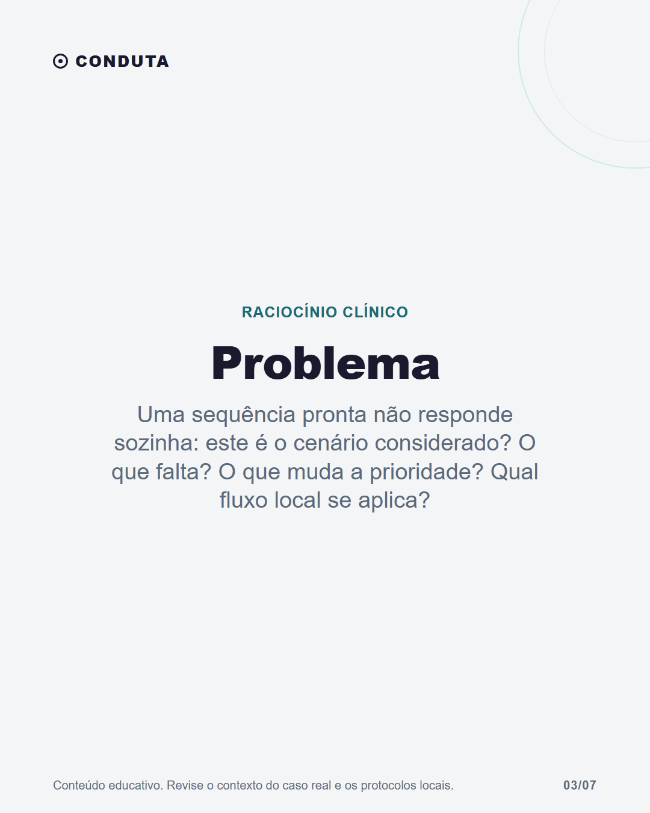
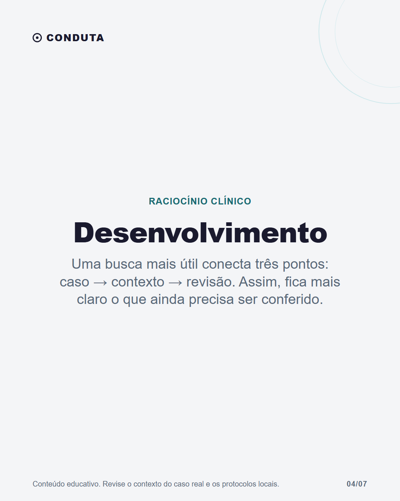
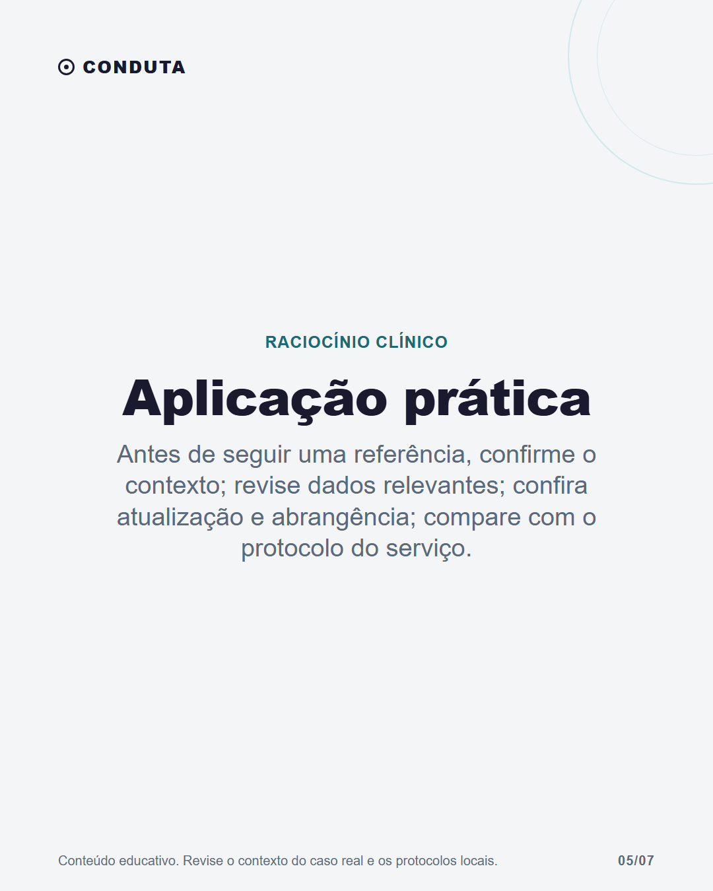
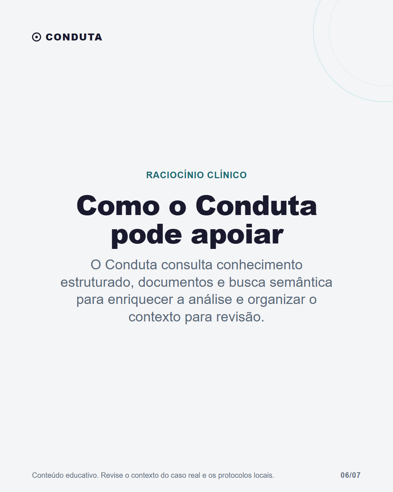

Quando buscar protocolo não basta





Legenda
Buscar uma referência durante o atendimento faz parte do trabalho. A questão é o que acontece depois da busca. O mesmo protocolo pode precisar ser interpretado à luz do cenário clínico, dos dados disponíveis, dos recursos do serviço e das regras locais. Por isso, encontrar uma fonte não encerra a revisão. O Conduta pode apoiar essa organização ao reunir contexto para o profissional conferir. A fonte original, os protocolos da instituição e o julgamento médico continuam essenciais. Salve para lembrar na próxima revisão de protocolo.
CTA: Salve para lembrar na próxima revisão de protocolo.
#raciocinioclinico #medicinageral #atencaoprimaria
Validação
Nenhum erro impeditivo.
Nenhum alerta.